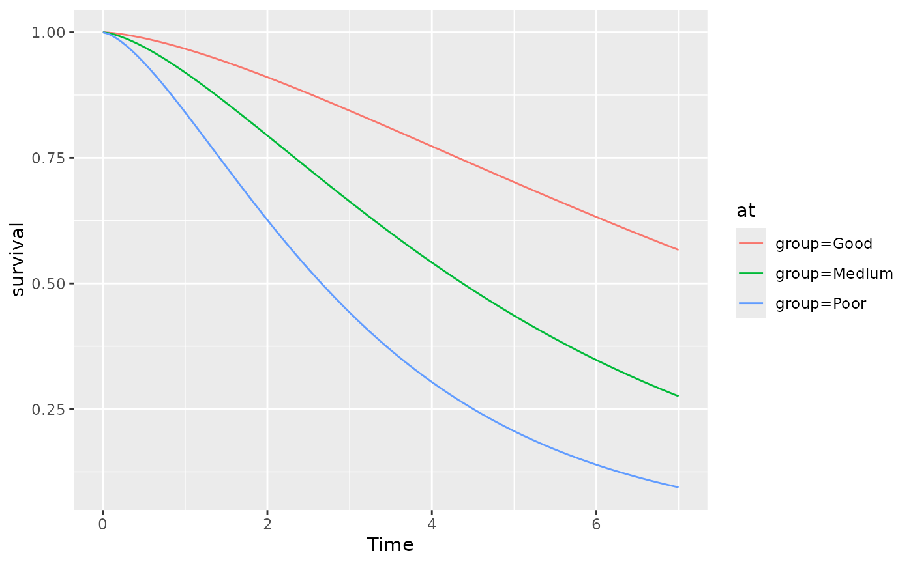

Plot standardized metrics such as the marginal survival, restricted mean survival and hazard, based on a fitted flexsurv model.
Usage
# S3 method for class 'standsurv'
plot(x, contrast = FALSE, ci = FALSE, expected = FALSE, ...)Arguments
- x
A standsurv object returned by
standsurv- contrast
Should contrasts of standardized metrics be plotted. Defaults to FALSE
- ci
Should confidence intervals be plotted (if calculated in
standsurv)?- expected
Should the marginal expected survival / hazard also be plotted? This can only be invoked if
rmapandratetablehave been passed tostandsurv- ...
Not currently used
Value
A ggplot showing the standardized metric calculated by
standsurv over time. Modification of the plot is
possible by adding further ggplot objects, see Examples.
Examples
## Use bc dataset, with an age variable appended
## mean age is higher in those with smaller observed survival times
newbc <- bc
newbc$age <- rnorm(dim(bc)[1], mean = 65-scale(newbc$recyrs, scale=FALSE),
sd = 5)
## Fit a Weibull flexsurv model with group and age as covariates
weib_age <- flexsurvreg(Surv(recyrs, censrec) ~ group+age, data=newbc,
dist="weibull")
## Calculate standardized survival and the difference in standardized survival
## for the three levels of group across a grid of survival times
standsurv_weib_age <- standsurv(weib_age,
at = list(list(group="Good"),
list(group="Medium"),
list(group="Poor")),
t=seq(0,7, length=100),
contrast = "difference", ci=TRUE,
boot = TRUE, B=10, seed=123)
#> Calculating bootstrap standard errors / confidence intervals
#> Calculating bootstrap standard errors / confidence intervals for contrasts
plot(standsurv_weib_age)

plot(standsurv_weib_age) + ggplot2::theme_bw() + ggplot2::ylab("Survival") +
ggplot2::xlab("Time (years)") +
ggplot2::guides(color=ggplot2::guide_legend(title="Prognosis"),
fill=ggplot2::guide_legend(title="Prognosis"))
plot(standsurv_weib_age, contrast=TRUE, ci=TRUE) +
ggplot2::ylab("Difference in survival")